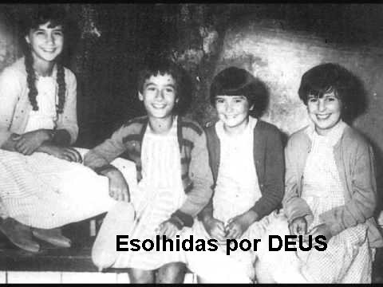
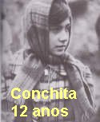
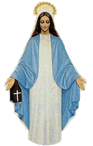
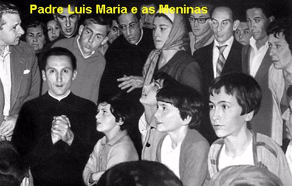
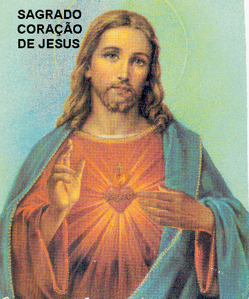

MENSAGENS DIVINA
PARA REAL�AR
OS ACONTECIMENTOS, CONCHITA DEU UM SALTO NA DESCRI��O DO SEU DI�RIO, PULANDO

A VIS�O QUER EDUCAR AS MENINAS
Neste dia, as meninas subiram a Estrada dos Pinheirais acompanhadas de todo pessoal (do local e dos peregrinos) �s 21:55 horas. A Comiss�o Diocesana decidiu que a leitura da Mensagem n�o fosse feita na porta da Igreja como a VIRGEM MARIA pediu. As meninas obedeceram escrupulosamente � ordem da autoridade eclesi�stica, porque NOSSA SENHORA sempre lhes ensinava, �sejam obedientes� , a obedi�ncia � um precioso e admir�vel dom Divino. E assim, elas aceitaram ler a Mensagem na �Calleja�. Quando as meninas chegaram, l� estava o Padre Valentim. Primeiro elas deram a Mensagem para ele ler e conhecer o assunto. Depois elas quatro juntas, leram a Mensagem para o povo. Como tinha muita gente e n�o ouviram com nitidez as palavras, um senhor com voz forte, leu novamente a Mensagem para todos. Em seguida desceram para o �Cercado� e logo que se ajoelharam, NOSSA SENHORA apareceu e lhes disse:
- �Agora quem est� duvidando � o Padre Ram�n Maria Andreu, S. J�.
Conchita ficou admirada porque o Padre Ram�n e seu irm�o Padre Luis Maria, tamb�m Jesu�ta, pela primeira vez subiu a Garabandal nos �ltimos dias do m�s de Julho de 1961, e depois, voltou v�rias vezes para acompanhar as manifesta��es sobrenaturais, sendo inclusive, testemunha de v�rios acontecimentos. Por esse motivo Conchita estranhou a revela��o da VIRGEM MARIA.
AGORA, VOLTANDO A SEGUIR O SEU DI�RIO, CONCHITA RETORNOU AO M�S DE AGOSTO DE 1961, DANDO CONTINUA��O A SUA EXPOSI��O
VIAGEM A SANTANDER
No inicio de Agosto, Conchita fez contato com o Padre Luis Luna, que era aparentado com sua fam�lia, a fim de lev�-la a Santander, pois tinha sido convidada pelo senhor Bispo a visit�-lo. Na v�spera deste fato, apareceu em Garabandal um Padre com uma t�nica totalmente branca e que chamou a aten��o de todos, porque nunca um religioso daquela Ordem havia estado l�.
Neste dia, Aniceta, a m�e de Conchita , mandou a filha perguntar a NOSSA SENHORA, se era conveniente que ela, Conchita, fosse a Santander.
Eram seis horas da tarde e as meninas j� caminhavam para o �Quadrado� (o reservado que fizeram na �Calleja� para proteg�-las), quando encontraram quatro sacerdotes que lhes deram um pacote de caramelos. Enquanto estavam fazendo a divis�o das balas, sentiram o �segundo chamado� . Largaram o pacote para tr�s e �voaram� para o local de costume. Assim que ajoelharam, NOSSA SENHORA apareceu. E como elas estavam curiosas em saber que padre era aquele, vestido de branco, perguntaram a VIRGEM MARIA. Ela n�o respondeu, apenas sorriu. As meninas curiosas insistiram, e ent�o, Ela disse que era um Padre Dominicano.
Conchita perguntou
tamb�m se ela devia ir a Santander, a VIRGEM n�o disse que n�o. Na verdade, em Santander,
o povo estava convivendo com a d�vida sobre as Apari��es: uns afirmavam que era
auto-sugest�o por parte de Conchita e transmitida �s demais por eteroindu��o,
tamb�m falavam em hipnotismo, em histeria, e sempre que faziam alguma acusa��o,
logo desencadeava outras hip�teses, reclamando a necessidade da abertura de um
interrogat�rio amplo sobre os fen�menos de Garabandal, a fim de deixar aparecer
� verdade. Por isso levaram Conchita para esclarecer muitas 
No primeiro dia em Santander, 27 de Julho, no hor�rio que sempre acontecia a Manifesta��o Sobrenatural em Garabandal, Conchita entrou em �xtase junto a "Igreja de La Consolaci�n" e teve uma Apari��o em Santander. Naquele mesmo hor�rio, nos �Pinheirais� em Garabandal, as outras tr�s meninas tamb�m tiveram a Apari��o e, NOSSA SENHORA lhes disse, que naquele mesmo momento, Ela estava aparecendo a Conchita em Santander. Posteriormente, Conchita contou que em Santander fizeram muitas provas com ela, ou seja, tanto os m�dicos, como os sacerdotes, fizeram testes de todos os modos, para ver se o �xtase em que ela estava, era verdadeiro ou n�o.
Terminada a Apari��o levaram Conchita para a "Sacristia da Igreja da Consolaci�n" e um sacerdote e um m�dico lhe fizeram muitas e muitas perguntas. O sacerdote era o Padre Francisco de Odriozola e o m�dico era Dr. Pi�al. Eles falavam com ela:
- �Como � que fazes estas coisas? Est� louca? Porque engana o mundo desse modo�?
Depois o Doutor disse:
- �Fica firme e olha no meu nariz, que vou lhe hipnotizar�!
Quando ele disse para ela olhar no nariz dele, Conchita n�o aguentou, ficou rindo, e ent�o ele zangou dizendo:
- �N�o rias, isto n�o � brincadeira, � coisa s�ria�.
E assim terminou este dia. Conchita afirma que depois, n�o lhe fizeram mais perguntas.
No dia seguinte, em companhia de outros m�dicos, levaram a menina a um m�dico chamado Dr. Morales, que tamb�m na sua sala tinha outros m�dicos. Ela foi examinada e todos disseram a mesma coisa, que estava tudo bem e que as Apari��es eram um sonho. Que ela foi conduzida a Santander para se distrair, a fim de esquecer tudo aquilo que havia passado e assim, n�o voltaria a ter mais Apari��es. A senhora Aniceta, m�e da menina, ficou t�o convencida com a palavra dos m�dicos, acreditando que tudo aquilo era uma fantasia da mente, deixou a filha em Santander e regressou a Garabandal.
Umas sobrinhas e uma irm� do Padre Odriozola, todos os dias iam a casa em que a Conchita ficou hospedada, para lev�-la a passear, tamb�m na praia, que ela nunca tinha visto antes pois s� conhecia o mar pelo nome. Como ela ia todos os dias a praia a VIRGEM n�o lhe apareceu mais. E assim ficou, at� que oito dias depois, um senhor, Dom Emilio Del Valle Egocheaga interferiu, porque sentiu que n�o era justo e nem correto proceder daquela maneira com uma menina t�o pequena, e por isso mandou avisar aos pais dela em Garabandal. Conchita disse que guardar� o nome desse homem por toda a sua vida, pelo grande favor que ele lhe prestou. Sua m�e, veio busc�-la, e assim, depois de tudo, todos se portaram bem com ela e terminou a sua visita a Santander com beijinhos e sorrisos.
Quando chegou a Garabandal de regresso, muitos sacerdotes e diversas pessoas foram ao encontro dela, com carinho e alegria, dizendo que a Loli e a Jacinta ouviram da Apari��o que ela estava retornando. Ent�o, todos foram receb�-la.
A VOZ NO GRAVADOR
No dia 5 de Agosto de 1961, Conchita e sua m�e, se encontraram com Maximina Gonz�lez, que era madrinha da menina e estava toda assustada e lhes perguntou:
- �Est�o comentando que ouviram a voz da VIRGEM no gravador. Voc�s souberam�?
- �Que assunto � este�? Elas perguntaram.
Loli e Jacinta que estavam chegando, inquiriram � senhora Maximina:
- �Anda, fala o que �?
Ela ent�o explicou que se ouviu na fita uma voz suave e meiga dizendo: �N�o, n�o falo�.
As pessoas que estavam presentes, depois da grava��o nos �Pinheirais�, dizia a madrinha de Conchita, come�aram a chorar muito emocionadas porque diziam terem ouvido a voz da VIRGEM. Na verdade, o que aconteceu foi o seguinte: uma pessoa tinha levado um gravador de pilhas e ensinou o seu funcionamento a Jacinta e a Loli. As duas meninas ficaram admiradas, porque nunca tinham visto coisa igual. Durante o �xtase gravaram as palavras ditas por elas mesmas e, depois, ligaram a reprodu��o para ouvir. Mas logo em seguida entraram novamente em �xtase e, uma das meninas, estava com o microfone na m�o e o aparelho ligado na grava��o. Ent�o ficou registrada a conversa delas com NOSSA SENHORA. Foi assim:
- �Tem aqui um
homem com um aparelho que grava tudo. Porque a SENHORA n�o fala alguma coisa, para
que o povo ou�a a TUA Voz? N�o � por n�s, � 
Terminado o �xtase, voltaram a ligar o gravador para as meninas escutarem o que haviam falado com a VIS�O. Quando chegou o momento em que as meninas diziam as palavras: �Fala, diga algo para que creiam�... A fita magn�tica acabou e neste mesmo momento saiu do aparelho uma voz, que as testemunhas classificaram de �suav�ssima e doce�, dizendo:
- �N�o, n�o falo�.
E a Loli e Jacinta que estavam presentes, exclamaram ao mesmo tempo:
- �Ui! Parece a Voz da VIRGEM�!
Como � evidente, a impress�o causada nas pessoas que estavam pr�ximas e ouviram a admira��o das meninas, foi muito grande. Davam-lhes tanta certeza, que uma delas ao regressar ao povoado, disse:
- �Morro hoje com a certeza de ter ouvido a voz da VIRGEM MARIA�.
Como conclus�o deste acontecimento, dias posteriores, quando se colocou o gravador para funcionar, n�o se ouvia mais a Voz da VIRGEM. Assim, qualquer interpreta��o que se queira dar a esta ocorr�ncia, tem como suporte a assinatura de um documento por doze (12) testemunhas, que presenciaram o fato, firmando a sua plena autenticidade.
DOIS SACERDOTES JESU�TAS
Descreve Conchita, que nos dias que passou em Santander, apareceram dois Sacerdotes Jesu�tas: Padre Ram�n Mar�a Andr�u e o Padre Luis Mar�a Andr�u, que estavam no meio do povo nos �Pinheirais�, mas que tamb�m n�o acreditavam que ocorressem as Manifesta��es Sobrenaturais. Na verdade, eles se portavam como a maioria das pessoas que compareciam aos encontros, era levada mais pela curiosidade do que pela f�. E muito embora, ela n�o estivesse nos �Pinheirais� neste dia, com as outras meninas, Conchita testemunha o fato que aconteceu no dia 28 de Julho, relatando o que ouviu de muitas pessoas que viram o acontecimento.
Loli e Jacinta, nos �Pinheirais�, em �xtase, receberam a Apari��o de NOSSA SENHORA. Os dois Padres estando presentes e ao lado das meninas, as observavam em completo �xtase, e assim passaram a acreditar que a VIRGEM estava presente. Principalmente quando passou um pequeno rato e as duas em �xtase nem viram e nem se assustaram com o ratinho. Ent�o Padre Ram�n Maria pensou:
- �Se tudo isto � verdade, que uma delas saia do �xtase, ou seja, que a VIRGEM se oculte a ela�.
Imediatamente a Vis�o se ocultou a Loli e ela saiu do �xtase. Loli olhou sorridente para o sacerdote e aconteceu o seguinte di�logo. Ele perguntou:
- �Voc� n�o v� a VIRGEM�?
- �N�o senhor. Porque Ela se ocultou�.
A Jacinta continuava em �xtase. Ent�o o Padre falou:
- �Olha a Jacinta�.
Ela olhou e sorriu vendo a amiga em �xtase. Era a primeira vez que uma menina via a outra em �xtase. E o Padre ent�o perguntou:
- �E o que lhe disse a VIRGEM�?
Nesse momento, ela entrou novamente em �xtase, inclinando a cabe�a para cima, olhando a VIRGEM. N�o lhe respondeu mais nada. A seguir o Padre presenciou um �esclarecedor� dialogo das Meninas entre si, em �xtase e com a Vis�o. A Jacinta perguntou a Loli:
- �Porque voc� se foi�?
Loli respondeu perguntando a Vis�o:
- �Porque a SENHORA se ocultou de mim�?
Houve uma pausa, com um pequeno sil�ncio. A seguir as duas conversaram com a VIRGEM:
- �Ah! Ent�o � por isso! � para que ele creia�!

O Padre Ram�n que acompanhava tudo atentamente, percebeu, que aquela ocorr�ncia foi uma provid�ncia elaborada pela VIRGEM MARIA, para faz�-lo crer.CARINHO DE NOSSA SENHORA
No dia 8 de Agosto as quatro meninas receberam a Vis�o, e tinha muita gente e, entre elas, o Padre Lu�s Maria Andreu, um seminarista Andr�s Pardo e o Padre Dominicano Royo Marin. Era noite quando NOSSA SENHORA chegou. As meninas em �xtase foram caminhando para os Pinheirais�. L� chegando, o Padre Lu�s Maria em altos brados disse: �Milagre! Milagre! Milagre! Milagre!� E ficou olhando para cima, como as meninas em �xtase faziam. Aqui se faz necess�rio uma explica��o: as meninas em �xtase n�o v�em nada, a n�o ser a VIRGEM MARIA e elas mesmas, umas as outras. As pessoas que assistem, como � natural s� v�em as meninas em �xtase. Como disse Conchita em seu Di�rio, a M�E DE DEUS disse a elas, que tinha aparecido ao Padre Lu�s Maria, e por isso, o motivo da exclama��o dele. NOSSA SENHORA mostrou-lhe tamb�m, por antecipa��o �O Grande Milagre�. Esta manifesta��o da VIRGEM foi um pr�mio ao Padre Lu�s Maria, que era um sacerdote exemplar e digno de todos os enc�mios, sobretudo, ele verdadeiramente amava DEUS e nossa M�E SANT�SSIMA.
O AVISO, O GRANDE MILAGRE, O CASTIGO
Antes de acontecer �O Grande Milagre� , haver� �Um Aviso� . Numa carta de Conchita com data do dia 2 de Junho de 1965, ela aborda este acontecimento.
�Antes do GRANDE MILAGRE, a VIRGEM MARIA me disse no dia 1� de Janeiro de 1965, que haver� um �AVISO� para que o mundo se converta. Este �AVISO� � como um �Castigo Suave�, que deve ser temido pelas pessoas boas e m�s. Aos bons deve soar como um convite para ser mais amoroso e fiel a DEUS. Para os maus, servir� para lhes avisar de que vir� um �GRANDE CASTIGO�, e que aquele ser� o �ltimo �AVISO� para toda humanidade. O acontecimento � muito grande, n�o se pode dizer por carta, em duas palavras. E tamb�m, ele n�o resgata nada daquilo que est� para acontecer, ou seja, que j� est� programado. � certo que o �AVISO� vir� e abranger� o mundo inteiro. A humanidade compreender� que ele, o �AVISO�, vem de DEUS. Eu n�o sei o dia e nem a data quando acontecer�. (Conforme o Di�rio de Conchita)
Ela acrescenta, que no �AVISO� veremos todo o mal que praticamos contra DEUS atrav�s de nossos pecados, que agravaram terrivelmente a Paix�o de NOSSO SENHOR.
Depois deste �AVISO� vir� �O GRANDE MILAGRE� que Conchita menciona no seu Di�rio. NOSSA SENHORA revelou-lhe a data deste extraordin�rio acontecimento e autorizou a Conchita dizer em segredo esta data a sua m�e Aniceta e a duas pessoas em Roma. E tamb�m, com oito (8) dias de anteced�ncia, Conchita revelar� ao mundo a realiza��o do �GRANDE MILAGRE�. Ser� uma ocorr�ncia muito grande, vista em Garabandal e sobre os montes que circundam a pequena cidade. Ser� numa quinta-feira, coincidindo com a Festa de um Santo M�rtir relacionado com a Eucaristia. Tamb�m coincidir� com um grande acontecimento da Igreja. Este acontecimento j� teve lugar na exist�ncia da Igreja, mas n�o na vida de Conchita. Ser� as 20:30 horas, que foi o hor�rio da primeira Apari��o em Garabandal. Ter� a dura��o de 10 a 15 minutos. Deixar� um �SINAL� permanente na Terra, que por si mesmo ser� um "Milagre Permanente". N�o ser�o necess�rios que Conchita e nenhuma das outras tr�s meninas estejam presentes ao Milagre, que DEUS far� por intercess�o da VIRGEM MARIA. Os enfermos que estiverem presentes se curar�o e os incr�dulos recuperar�o a f�. O Padre Pio e o Papa ver�o o Milagre, desde onde estiverem. Depois deste �GRANDE MILAGRE� , se o mundo n�o se converter, DEUS enviar� um �GRANDE CASTIGO�.
MORTE DO PADRE LU�S MARIA
Certo dia estava �s quatro meninas varrendo a Igreja, quando de repente, surgiu a m�e da Jacinta, muito assustada, dizendo que o Padre Lu�s Maria Andreu tinha morrido. As meninas pararam com a limpeza e comentaram: �Ontem ele esteve conosco aqui�!
E juntas com as outras pessoas, foram participar do sepultamento dele. Disseram �s pessoas que as �ltimas palavras do Padre foram:
- �Hoje � o dia mais feliz da minha vida! Que M�e carinhosa temos no C�u�! Depois morreu.
(Este Padre era professor de Teologia na Faculdade que a Companhia de JESUS tinha na Prov�ncia de Burgos, na Espanha. Tinha feito estudos em O�a (Espanha), Innsbruck (�ustria) e em Roma (It�lia). Quando morreu tinha 36 anos de idade. Foi a Garabandal pela primeira vez nos �ltimos dias do m�s de Julho, como j� mencionamos, e voltou no dia 8 de Agosto. Neste dia, o Padre Valentim lhe deu as chaves da Igreja, pois teria que se ausentar de Garabandal. Na tarde do dia 8 de Agosto acompanhou um �xtase das quatro meninas que come�ou na Igreja. Depois elas sa�ram numa �marcha ext�tica� de longa dura��o. Paravam nos lugares onde anteriormente tiveram Apari��es e ali rezavam. O Padre Lu�s Maria seguiu todo o �xtase das meninas. A seguir subiram para os "Pinheirais� e o Padre tamb�m foi junto. Estando ali nos �Pinheirais� (Calleja ou Quadrado), o Padre Lu�s Mar�a pela Vontade de DEUS, tamb�m entrou no �Campo de Vis�o das meninas�. Fato que j� foi mencionado acima, quando vendo NOSSA SENHORA, ele exclamou quatro vezes a palavra �Milagre�! Tinha a voz um tanto apagada semelhante a das meninas, quando estavam em �xtase. E elas, depois descreveram como viram o Padre Lu�s Maria seguindo os passos delas:
- �Ele estava como se tivesse rodinhas nos p�s, e o suor, corria caudaloso por sua face. A VIRGEM MARIA olhava ternamente para ele, como se dissesse: EM BREVE ESTAR�S COMIGO�.
Um Ter�o que o Padre Lu�s Maria deixou com Loli para a VIRGEM beijar, se perdeu na montanha. O �xtase terminou na Igreja e Loli disse ao Padre:

- �Perdi o seu Ter�o, mas a VIRGEM MARIA me disse onde est�. Vamos l� busc�-lo�.
Como j� passavam das 10 horas da noite, Julia, a m�e de Loli falou:
- �N�o agora. Melhor ser� amanh� com a luz do dia�.
E o Padre Lu�s Maria concordou e disse:
- �Sim! Melhor amanh� com a luz do dia. E voc� encontrando-o n�o d� a ningu�m s� ao meu irm�o, ainda que eu n�o esteja aqui, mas meu irm�o estar�.
Assim fez Loli no dia seguinte. Encontrou o Ter�o exatamente no lugar indicado por NOSSA SENHORA. Guardou o Ter�o e entregou ao irm�o dele, Padre Ram�n.
A morte do Padre ocorreu assim: nesta mesma noite, depois das 22 horas, o Padre Lu�s Maria viajou de Garabandal a Cos�o de jeep. Ali esperou os que vinham a p� pela estrada. Dentro do jeep esperou at� a uma hora da madrugada, quando chegou o Padre Valentim. Este se aproximou do veiculo para lhe perguntar algo, e o Padre Lu�s Maria disse:
- �Padre Valentim, o que as meninas dizem � verdade, mas ainda n�o divulgue nada, porque toda a prud�ncia da Igreja nestes casos, deve ser a maior poss�vel�.
(Esta frase, Dom Valentim escreveu no seu di�rio, na mesma noite que teve a noticia da morte do Padre Lu�s Maria).
Ainda na noite da ocorr�ncia, na estrada de Cos�o � Aguilar de Campo seguia uma caravana com quatro ve�culos, e entre eles estava o Padre Lu�s Maria. No carro em que viajava, haviam mais tr�s pessoas. E o Padre Lu�s Maria conseguiu dormir um pouco. Ao despertar, disse:
- �Eu tive um sonho maravilhoso. Descansei bem, n�o estou nem um pouco cansado�.
Chegaram a Reinosa as quatro horas da madrugada. Ali, todos os carros pararam a entrada do povoado, onde tinha uma fonte de �gua. Desceram para beber um pouco, enquanto o Padre Lu�s Maria permaneceu no carro com a porta aberta, pois n�o estava com sede. E logo, ele foi rodeado pelas demais pessoas que lhe fizeram perguntas sobre o que tinha visto. O Padre permaneceu em sil�ncio, com um ligeiro sorriso na face. No momento de continuar o trajeto, o carro onde viajava o Padre Lu�s Maria saiu em ultimo lugar. Dentro do lugarejo, conversando com as pessoas dentro do mesmo carro, o Padre Lu�s disse:
- �Estou cheio de alegria! Que presente a VIRGEM me deu! Que sorte ter uma M�e assim no C�u! N�o devemos ter medo da vida sobrenatural. As meninas nos t�m ensinado como devemos tratar a VIRGEM. Para mim j� n�o existe mais d�vida. Por que ser� que a VIRGEM nos escolheu? Hoje � o dia mais feliz da minha vida�. Assim que falou estas palavras levantou a face para o C�u. Como ele n�o falava mais nada, perguntaram:
- �Padre, aconteceu alguma coisa�? Ele respondeu:
- �N�o, nada, foi um lindo sonho�. E dizendo isto abaixou a cabe�a.
Jos� Salceda, o motorista virando o rosto para v�-lo, disse:
- �Ai! O Padre est� muito mal. Est� apagando os seus olhos�!
Ali mesmo tinha uma Cl�nica Oftalmol�gica. Mas nada se pode fazer, do que constatar a autenticidade de sua morte. N�o se conhecia nele nenhuma enfermidade. Morreu, podemos dizer, como se estivesse dormindo. Tinha no rosto um leve sorriso de felicidade. Entretanto, a hist�ria deste Padre e de Garabandal, n�o terminou com a morte dele. As meninas falavam frequentemente com ele, conforme se pode observar pelo �Di�rio de Conchita�. O mais surpreendente � que a VIRGEM MARIA comunicou a Conchita que no dia seguinte ao �Grande Milagre�, o corpo deste Padre ser� exumado e aparecer� o seu �corpo incorrupto�. Conchita escreveu este fato numa carta:
- �No dia 18 de Julho tive uma alocu��o interior e nela me foi dito que no dia seguinte ao �GRANDE MILAGRE� ir�o tirar o Padre Lu�s Maria da tumba e seu corpo estar� incorrupto�.
A m�e do Padre, 40 dias ap�s o sepultamento do filho, no m�s de Outubro de 1961, entrou na clausura da Ordem Religiosa da Visita��o, em San Sebastian de Garabandal tornando-se monja.
Passados alguns dias da morte do Padre Lu�s Maria, a SANT�SSIMA VIRGEM MARIA disse �s meninas que elas iam conversar com ele.
Perguntado ao Padre Ram�n Maria, irm�o do Padre falecido, sobre as conversas do irm�o falecido com as meninas, ele disse que presenciou algumas, e que ficou surpreso e agradecido a miseric�rdia infinita do SENHOR.